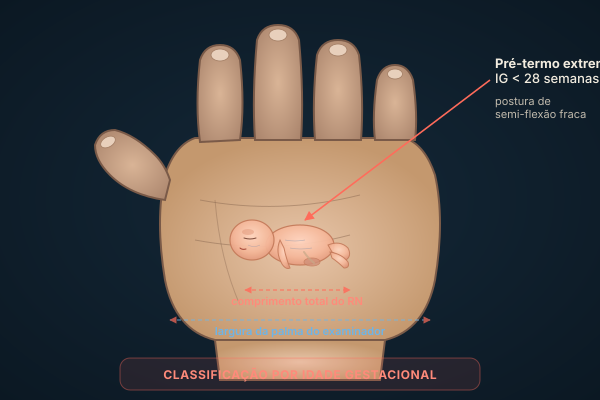
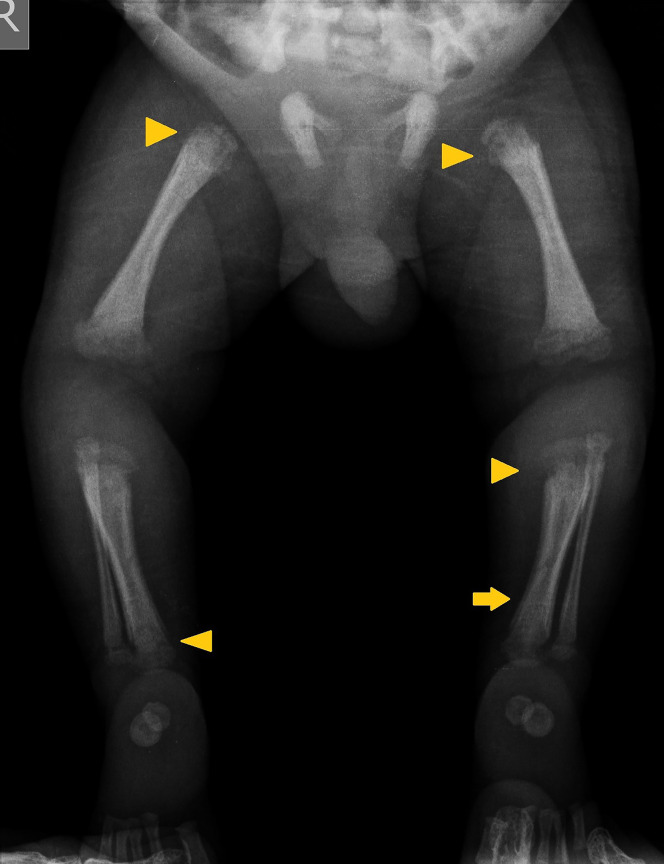
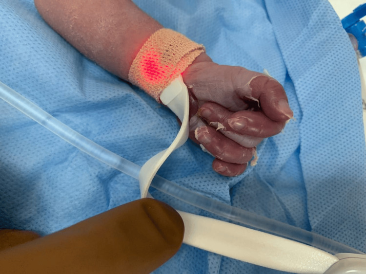
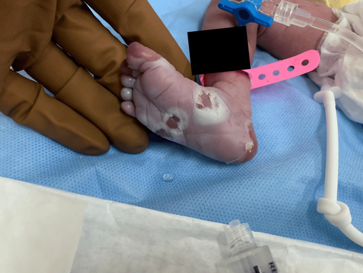
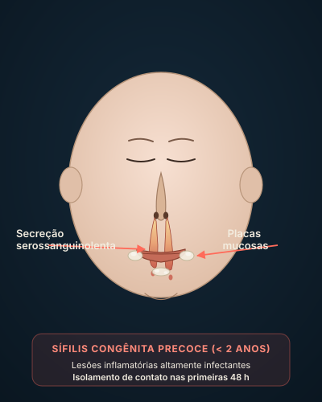
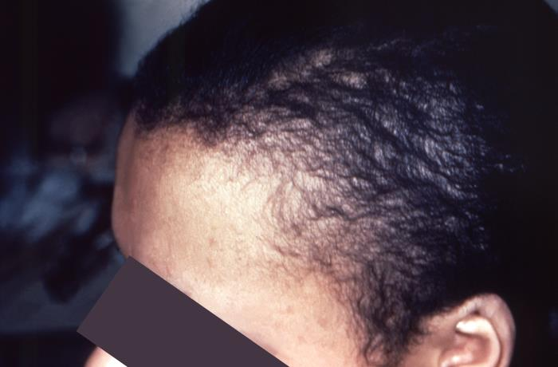
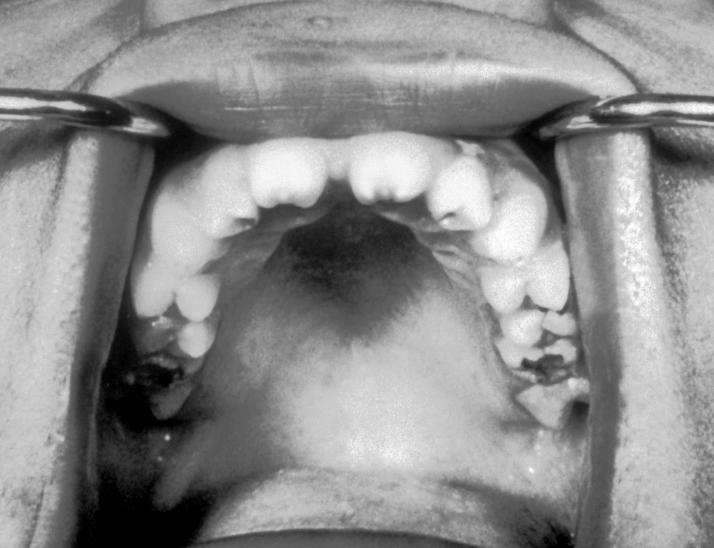
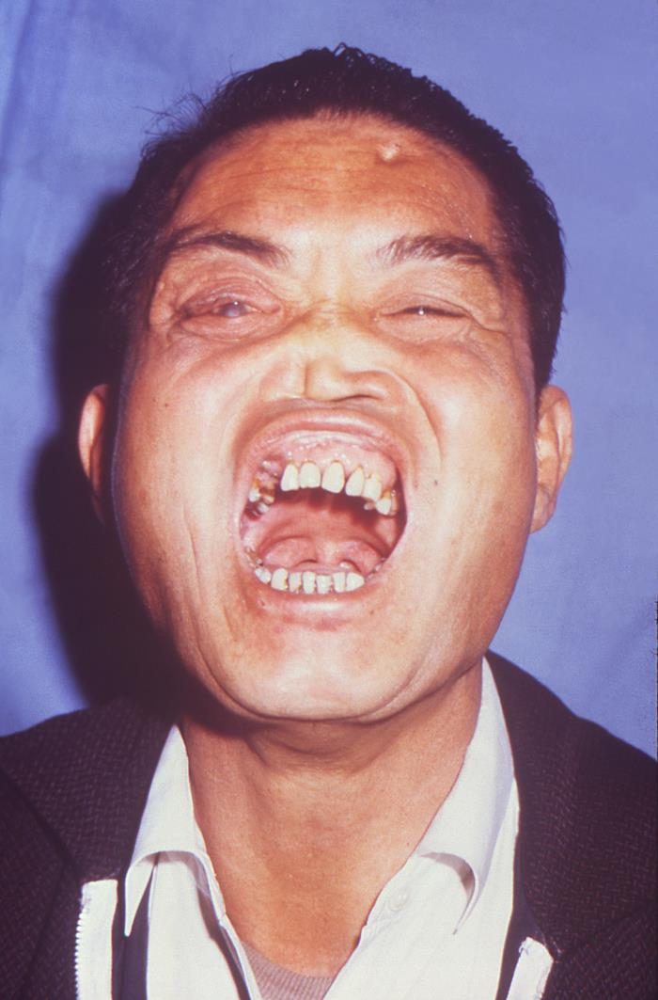

Página 1.1E3 · Caso clínicoItens: [001]-[007] · [065]-[077]
Quem entra na sala de parto classifica antes de tratar
Caso clínico — abertura do módulo
O município de Gericianã da Mata fica longe da capital. A principal atividade comercial por ali é o cultivo de pitangas. É nesse cenário pequeno e distante que começa o primeiro caso clínico do Módulo 1.
Florinda Rosa, 20 anos, casada há cinco, está na 14ª semana de gestação. Os exames iniciais de pré-natal trazem o diagnóstico que muda a rota: sífilis. Florinda recebeu tratamento — 2.400.000 UI de penicilina benzatina, dose única. VDRL inicial: 1:32. Esses dois números retornam várias vezes; guarde-os.
Meses depois, Florinda chega à maternidade. João Eucalipto nasce com 36 semanas e 4 dias de idade gestacional, 1.900 g, 46 cm. Logo após o nascimento, João precisa de atendimento na sala de parto: está hipotônico e em apneia. Estabilizado, é levado para a UTI neonatal. O líquor das primeiras horas mostra 40 células e 160 proteínas.
O caso está montado. Antes de decidir o que fazer, a primeira pergunta do pediatra que recebe João Eucalipto não é sobre a sífilis materna, nem sobre o líquor alterado, nem sobre a apneia. A primeira pergunta é mais simples — e mais fundadora.
Quem é esse bebê?
Esta é a pergunta da neonatologia — a subespecialidade pediátrica que estuda a primeira fase, o primeiro momento da vida. Antes de tratar qualquer coisa, o pediatra que recebe um recém-nascido precisa colocá-lo em compartimentos de classificação. Esses compartimentos respondem se o bebê veio adequado ao mundo dentro do que se espera para que ele se desenvolva melhor — e orientam tudo o que vem em seguida.
Existem três parâmetros principais para classificar o recém-nascido:
Idade gestacional — o tempo de vida intrauterina que o bebê tinha quando saiu do útero.
Peso ao nascer — o número lido na balança imediatamente após o parto.
Cruzamento idade gestacional × peso — a comparação dos dois parâmetros anteriores em um gráfico de crescimento intrauterino.
João Eucalipto passa pelas três classificações. Cada uma tem espaço próprio adiante. A primeira pergunta sobre João — pré-termo? termo? grande? pequeno? — começa a ser respondida agora, e fecha na página 1.4 com a posição dele no gráfico.
Quiz — fixação
Pergunta 1
Florinda chegou à maternidade trazendo qual diagnóstico do pré-natal?
Gabarito: C. O diagnóstico de sífilis materna foi feito no pré-natal pelos primeiros exames, com VDRL 1:32. Esse dado abre o raciocínio das páginas 1.6 a 1.11.
Distratores A, B e D são outras infecções congênitas relevantes, mas nenhuma foi referida no caso. O exame que diagnosticou Florinda foi o VDRL 1:32 — específico para sífilis.
Pergunta 2
Quantos parâmetros principais existem para classificar um recém-nascido?
Gabarito: B. Idade gestacional, peso e o cruzamento dos dois em um gráfico. Comprimento e perímetro cefálico são medidas antropométricas que entram em outras avaliações, não na classificação fundadora.
A falha em incluir o cruzamento (alternativa A) é o erro mais comum — sem o gráfico não se chega ao PIG/AIG/GIG.
Pergunta 3
Por que o pediatra começa a avaliação de João Eucalipto pela classificação, antes de pensar na sífilis materna?
Gabarito: B. A classificação é a base sobre a qual todo o resto se constrói. As outras alternativas vinculam falsamente a classificação a um propósito restrito.
A: sífilis congênita é investigada em qualquer bebê de mãe com sífilis, independente da IG. C: o tratamento da sífilis no RN funciona em prematuros e a termo. D: classificação é decisão clínica, não cartorial.
A primeira das três classificações é por idade gestacional, e ela se prende a dois números: 37 e 42 semanas. A página 1.2 explica de onde vêm esses cortes, por que o pré-termo precisa ser subdividido em tardio e extremo, e como o pediatra estima a IG quando o dado obstétrico não está disponível.
semanas — faixa em que o pré-termo extremo nasce. Bebê às vezes cabe inteiro na mão de quem examina; pulmões e demais órgãos ainda rudimentares.
É essa a faixa em que o pré-termo extremo nasce. Nessa janela, o bebê pode caber inteiro na mão de quem o examina. Os pulmões ainda são rudimentares. Os outros órgãos, também. As complicações dessa idade não se parecem com as de um pré-termo de 35 semanas, e tratar todos os pré-termos como se fossem iguais é o primeiro erro clínico que a neonatologia aprendeu a evitar.
A idade gestacional é o tempo de vida intrauterina que o bebê tinha quando saiu do útero da mãe. O ideal é obter esse dado pelo cartão da gestante: a data da última menstruação (DUM) ou o ultrassom obstétrico precoce dão o número direto. Quando esse dado obstétrico não está disponível — gestante sem pré-natal, cartão perdido, parto pré-hospitalar —, o pediatra estima pelo exame físico do recém-nascido. Os dois métodos clínicos canônicos são o Capurro e o New Ballard.
Capurro é mais fácil de aplicar à beira-leito. Avalia características físicas externas (textura da pele, forma da orelha, glândula mamária, formação do mamilo, pregas plantares). É rápido, prático, e funciona bem para o bebê próximo ao termo. Mas tem um ponto cego: na faixa mais prematura, especialmente abaixo de 32 semanas, o Capurro não distingue bem uma criança da outra. Para crianças prematuras, especialmente muito prematuras, o método de New Ballard é mais adequado. New Ballard inclui também critérios neurológicos (postura, ângulos articulares, manobras) e tem maior precisão nessa faixa.
Definida a forma de obter a IG, vêm os números. A classificação por idade gestacional é a usada com mais frequência e é tão correta quanto ainda incompleta — incompleta porque vai precisar do peso e do cruzamento para resolver o caso clínico completo. Mas é o primeiro filtro. Apegue-se a dois pontos de corte principais: 42 semanas e 37 semanas.
Esses dois cortes geram três faixas:
Pós-termo: bebê que nasce com 42 semanas ou mais de IG.
Termo: bebê que nasce entre 37 semanas e 41 semanas e 6 dias (não chegou a completar 42 semanas).
Pré-termo (popularmente "prematuro"): bebê que nasce abaixo de 37 semanas.
O pré-termo é o grupo que mais cresce em complexidade clínica, e por isso recebe subclassificação. Não é correto pegar todos os bebês prematuros, colocá-los no mesmo saco e dizer que são iguais. Existe o prematuro que faltava pouco para nascer — próximo do termo — e o prematuro que faltava demais. Crianças prematuras com diferentes proximidades do termo não têm os mesmos riscos de complicações. Daí dois recortes adicionais:
Pré-termo tardio: bebê que nasceu com menos de 37 semanas, mas ainda entre 34 semanas e 36 semanas e 6 dias. É o grupo mais próximo do termo.
Pré-termo extremo: bebê que nasceu com menos de 28 semanas. Faltavam muitas semanas. Pulmão e demais órgãos são rudimentares. Complicações gravíssimas — hemorragia intraventricular, doença da membrana hialina grave, enterocolite necrosante, sepse precoce — acometem principalmente o pré-termo extremo, não os demais pré-termos.
Existe ainda uma faixa intermediária (pré-termo moderado, 28 a 33+6 sem) que algumas classificações detalham. Para o que cai em prova e para a conduta de assinatura, os dois recortes essenciais são tardio e extremo.
Pré-termo extremo< 28 sem
Pré-termo moderado28 — 33+6 sem
Pré-termo tardio34 — 36+6 sem
Termo37 — 41+6 sem
Pós-termo≥ 42 sem
V02 — Linha do tempo gestacional 22 a 44 sem com cortes 28/34/37/42. João Eucalipto marcado em 36+4 sem (faixa pré-termo tardio).

Achado: escala de tamanho do pré-termo extremo (<28 sem, ~600 g) — corpo inteiro cabe na palma do examinador adulto. Cabeça desproporcionalmente grande, pele translúcida com vasos visíveis, pavilhão auricular sem cartilagem.
Ilustração esquemática autoral Bauer. Não é foto clínica; representação anatômica didática.
Quiz — fixação
Pergunta 1
Um bebê nasceu com 41 semanas e 5 dias de idade gestacional. Como é classificado?
Gabarito: B. Termo vai de 37 semanas até 41 semanas e 6 dias (não chegou a completar 42 semanas). 41+5 está dentro da faixa.
A pegadinha comum é classificar como pós-termo já com 41+5; o corte é 42 semanas completas — 41+5 ainda é termo.
Pergunta 2
João Eucalipto nasceu com 36 semanas e 4 dias. Em qual subgrupo de pré-termo se enquadra?
Gabarito: C. Pré-termo tardio é 34 a 36+6 sem. 36+4 cai exatamente nessa faixa. Esta classificação será usada novamente nas páginas 1.4 e 1.11 para resolver o caso.
A confunde com a faixa <28 sem; D é categoria inventada — não existe "termo precoce" oficial.
Pergunta 3
Por que o método de New Ballard é preferido em relação ao Capurro quando se trata de um bebê muito prematuro?
Gabarito: B. Capurro é mais fácil e rápido, mas perde discriminação em prematuro extremo. Ballard agrega critérios neurológicos (postura, ângulos, manobras) e mantém precisão na faixa <32 sem.
C inverte a relação (Capurro é o mais rápido). A e D são falsas (não há restrição por sexo ou faixa exclusiva).
Definida a IG, falta o segundo parâmetro: o peso ao nascer. A página 1.3 traz os três cortes de peso que toda neonatologia decora (2.500, 1.500, 1.000 g) e — mais importante — fecha as correlações obrigatórias entre peso e IG que permitem deduzir uma classificação a partir da outra sem precisar do gráfico.
Se um bebê nasceu com menos de 1.500 g, ainda é possível que ele seja a termo?
A resposta é não. E entender por quê é o que torna a classificação por peso muito mais interessante do que apenas ler um número na balança.
O peso ao nascer é obtido colocando o recém-nascido em uma balança e lendo o valor numérico. Tão simples quanto isso. O que importa é guardar três pontos de corte que sustentam essa classificação:
2.500 g — fronteira entre adequado e baixo peso
1.500 g — fronteira entre baixo peso e muito baixo peso
1.000 g — fronteira entre muito baixo peso e extremo baixo peso
Esses três cortes geram três categorias:
Baixo peso (BP): RN com menos de 2.500 g, mas pelo menos 1.500 g — de 2.499 g até 1.500 g.
Muito baixo peso (MBP): RN com menos de 1.500 g, mas pelo menos 1.000 g — de 1.499 g até 1.000 g.
Extremo baixo peso (EBP): RN com menos de 1.000 g (menos de 1 quilo).
Adequado≥ 2.500 g
Baixo peso (BP)1.500 — 2.499 gSem correlação obrigatória com IG — pode ser pré-termo, termo, pós-termo.
Muito baixo peso (MBP)1.000 — 1.499 gCorrelação obrigatória: sempre pré-termo.
Extremo baixo peso (EBP)< 1.000 gCorrelação obrigatória: sempre pré-termo, geralmente extremo (<28 sem).
Esses mesmos números — 2.500 / 1.500 / 1.000 g — voltam a aparecer em outro ponto importante da pediatria: na profilaxia de anemia ferropriva. A dose de ferro em mg/kg/dia no prematuro e no bebê de baixo peso usa essas mesmas faixas para definir quanto suplementar. Para o bebê a termo e adequado para a idade gestacional, a profilaxia segue uma classificação diferente. Saber os cortes uma vez serve em mais de um lugar.
A correlação que muda tudo
Até aqui, peso e IG parecem dois eixos independentes. Não são. Eles se correlacionam de forma obrigatória em parte da escala — e essa correlação é o que permite ao pediatra deduzir uma classificação a partir da outra, mesmo sem o gráfico em mãos.
Comece pela faixa mais leve. Um bebê de baixo peso (entre 2.500 g e 1.500 g) pode ter nascido a termo ou pré-termo. Exemplo: um bebê de 2.400 g pode ser um pré-termo tardio que estava adequado, ou um termo PIG que cresceu pouco intraútero. Aqui não dá pra deduzir IG só pelo peso.
Mas conforme o peso desce, a margem some.
Toda criança que nasceu com menos de 1.500 g será necessariamente pré-termo. Não existe bebê a termo com menos de 1.500 g — em RN a termo, o P3 (limite inferior absoluto da normalidade pediátrica geral) já está acima de 1.500 g. Basta a criança ser de muito baixo peso (pelo menos MBP) para se saber que ela é prematura. A questão não precisa dizer por escrito que é prematuro: se disser que é uma criança com menos de 1.500 g, faça a correlação automática.
O extremo da escala segue a mesma lógica, ainda mais forte. Pré-termo extremo (menos de 28 semanas) será necessariamente uma criança de extremo baixo peso (menos de 1.000 g). É exatamente com 28 semanas que os bebês, em geral, atingem o peso de 1.000 g — esse é o ponto de cruzamento clássico do gráfico de crescimento intrauterino. Abaixo de 28 semanas, os bebês devem ser de extremo baixo peso.
Categoria
Peso
Correlação IG obrigatória?
Adequado
≥ 2.500 g
Não — pode ser pré-termo, termo, pós-termo
Baixo peso (BP)
1.500 — 2.499 g
Não — pode ser pré-termo ou termo
Muito baixo peso (MBP)
1.000 — 1.499 g
SIM — sempre pré-termo
Extremo baixo peso (EBP)
< 1.000 g
SIM — sempre pré-termo, geralmente extremo (<28 sem)
V03 — Escala vertical de peso ao nascer com cortes 2.500 / 1.500 / 1.000 g. João Eucalipto marcado em 1.900 g (faixa BP). MBP e EBP têm correlação obrigatória com prematuridade.
Quiz — fixação
Pergunta 1
Um recém-nascido nasceu com 1.200 g. O que se pode afirmar imediatamente?
Gabarito: B. 1.200 g está na faixa de MBP (1.000-1.499 g). MBP é correlação obrigatória com prematuridade — não existe bebê a termo com menos de 1.500 g.
A alternativa C estaria correta para a faixa BP (1.500-2.499 g), mas não para MBP. A confunde MBP com "PIG severo" — PIG é classificação relativa, não absoluta.
Pergunta 2
Em que faixa de peso João Eucalipto (1.900 g) se enquadra?
Gabarito: B. 1.900 g está entre 1.500 g e 2.499 g — faixa de baixo peso. Esta classificação será usada na página 1.4 quando o caso for cruzado com o gráfico IG×peso.
Confundir BP com MBP é erro frequente: o limite inferior do BP é 1.500 g; João está acima desse limite.
Pergunta 3
Por que um bebê de pré-termo extremo (menos de 28 semanas) precisa, obrigatoriamente, ser de extremo baixo peso?
Gabarito: B. O marco "28 sem ≈ 1.000 g" é o ponto de cruzamento das curvas de crescimento intrauterino (Fenton 2013, Intergrowth-21st 2014). Abaixo de 28 sem, o peso fica abaixo desse marco.
C inverte causa e efeito: pré-termo extremo é definido apenas pela IG (<28 sem); a correlação com EBP é consequência fisiológica, não critério definicional.
Com IG e peso classificados separadamente, falta cruzá-los no gráfico de crescimento intrauterino. É no cruzamento que o bebê é classificado como GIG, AIG ou PIG — e é aí que a pegadinha clássica do P10/P90 (contra o P3/P97 da pediatria geral) entra em cena. A página 1.4 também devolve uma primeira resposta sobre João Eucalipto: ele é PIG.
O gráfico que separa GIG, AIG e PIG (e a pegadinha do P3/P97)
No recém-nascido, as curvas de normalidade nutricional são o percentil 3 e o percentil 97.No recém-nascido, as curvas de normalidade são P10 e P90 — não P3 e P97. P3/P97 é da pediatria geral (2-19 anos). Trocar uma pela outra é o erro mais frequente em prova de neonatologia.
Muitos alunos chegam à neonatologia carregando os percentis errados na cabeça. Em pediatria geral — para a criança em crescimento, dos 2 aos 19 anos —, as curvas de normalidade nutricional são o percentil 3 e o percentil 97. Esses são os cortes da OMS para crescimento pós-natal. E é exatamente por isso que erram a prova de neonatologia: porque transportam P3/P97 para o gráfico do recém-nascido. Está errado.
Repita, porque vale: P10 e P90, não P3 e P97.
Esclarecida a pegadinha, o resto é raciocínio direto. Tendo uma classificação por idade gestacional e outra por peso, faz-se um comparativo entre as duas em um gráfico que tem IG no eixo horizontal e peso no eixo vertical. Pediatra ama gráfico. No gráfico IG × peso, as curvas de normalidade são a curva vermelha superior (P90) e a curva vermelha inferior (P10). Tudo que estiver entre essas duas curvas é considerado normal.
A posição do bebê em relação às curvas define três grupos:
GIG (grande para a idade gestacional): bebê com peso acima do P90 para a IG dele.
AIG (adequado para a idade gestacional): bebê com peso entre o P10 e o P90 — dentro da faixa esperada.
PIG (pequeno para a idade gestacional): bebê com peso abaixo do P10.
O normal — esperado — é a criança ser AIG. Bebês GIG e PIG têm risco muito maior de complicações. A complicação clássica de prova e plantão é a hipoglicemia — tanto o bebê GIG (frequentemente filho de mãe diabética, com hiperinsulinismo) quanto o bebê PIG (com reservas hepáticas de glicogênio reduzidas) caem em hipoglicemia precoce.
E quando o bebê é PIG, sempre se pergunta o porquê. Um bebê PIG nasceu PIG por algum motivo. Os fatores de risco que levaram a criança a ser PIG — restrição de crescimento intrauterino por insuficiência placentária, infecção congênita (uma das possibilidades para João Eucalipto), uso materno de substâncias, hipertensão gestacional, gestação múltipla, anomalias cromossômicas — todos precisam ser investigados.
V01 — Gráfico IG × peso com curvas P10 e P90. Acima do P90 = GIG. Entre = AIG. Abaixo do P10 = PIG. João Eucalipto (36+4 sem · 1.900 g) cai abaixo do P10.
Resolução parcial do caso
Hora de fechar a primeira pergunta do caso. João Eucalipto:
Idade gestacional: 36 semanas e 4 dias — pré-termo tardio (página 1.2)
Peso: 1.900 g — baixo peso (página 1.3)
Cruzamento no gráfico: 36+4 sem com 1.900 g cai abaixo do P10 → PIG
João Eucalipto é, portanto, um pré-termo tardio, baixo peso, PIG. As três classificações resolvidas. O "por quê PIG" vai ganhar uma hipótese forte na página 1.5, quando o tema mudar para infecções congênitas — e a sífilis materna entrar na equação como possível causa da restrição de crescimento intrauterino.
O atalho que economiza o gráfico
Há um atalho conceitual que vale a pena fixar agora. Uma criança com 37 semanas posicionada em cima do P10 deve ter entre 2.000 e 2.200 g. Em outras palavras: com 37 semanas, a criança tem que ter pelo menos cerca de 2.000 g para estar acima do P10.
Disso decorre uma dedução prática enorme: toda criança com 37 semanas ou mais que tenha menos de 2.000 g será, certamente, um bebê PIG (estará abaixo do P10). A questão não precisa dizer que é PIG nem dar o gráfico — basta antecipar com esse atalho.
Atalho prático
≥ 37 sem + < 2.000 g → PIG
sem precisar do gráfico
Esse atalho é uma das ferramentas mais úteis em prova de residência. Aparece em provas de hospitais top como pergunta-armadilha — dão o peso e a IG, não dão o gráfico, e cobram a classificação.
Quiz — fixação
Pergunta 1
Qual o erro do aluno que classifica um recém-nascido como "abaixo do P3" e conclui que ele é PIG?
Gabarito: B. P3 e P97 são cortes da OMS para crescimento pós-natal (2-19 anos). Em neonatologia, os cortes obrigatórios de adequação intrauterina são P10 e P90. Aplicar P3/P97 em RN é erro de método — independente do gráfico usado (Fenton, Intergrowth-21st, Battaglia & Lubchenco).
O erro é universal (C/D são falsas porque sugerem que o erro depende da IG ou da curva). A é a confusão direta — P3 NÃO equivale a P10.
Pergunta 2
Uma criança nasce com 38 semanas e 1.850 g. Sem ver o gráfico, é possível afirmar:
Gabarito: C. O atalho ≥37 sem + <2.000 g → PIG aplica-se diretamente. 38 sem com 1.850 g está abaixo do P10 para IG, sem necessidade de consultar o gráfico.
D ignora a regra de bolso; A e B são incompatíveis com o atalho. O atalho economiza o gráfico em prova.
Pergunta 3
Qual complicação clássica acomete tanto o bebê GIG quanto o bebê PIG, ainda que por mecanismos diferentes?
Gabarito: B. Hipoglicemia é a complicação clássica compartilhada — no GIG por hiperinsulinismo (frequentemente filho de mãe diabética); no PIG por reservas reduzidas de glicogênio hepático.
C e D são parcialmente verdadeiras (hipocalcemia associa com filho de mãe diabética; anemia tem causas múltiplas), mas a resposta com correlação obrigatória aos dois grupos é a hipoglicemia.
João Eucalipto é PIG, e PIG sempre faz perguntar o porquê. Uma das possibilidades fortes para essa restrição de crescimento intrauterino é justamente a infecção congênita — exatamente o que a mãe traz no diagnóstico (sífilis). A página 1.5 abre o segundo grande bloco: conceitos gerais de infecção neonatal — as cinco vias de transmissão, o que define "congênita" no sentido estrito, e como a diferença entre IgM e IgG decide o que pertence ao bebê e o que veio da mãe.
Transplacentária. Definição rigorosa, excludente. O resto não é congênita por definição.
O recém-nascido pode contrair infecção por duas formas amplas — dois grandes momentos —, que se desdobram em cinco vias específicas. Ao final, apenas uma dessas cinco vias merece o nome de infecção congênita. As outras quatro são reais, importantes, têm conduta própria — mas, por definição rigorosa, não são congênitas. E essa delimitação é o que separa o aluno que acerta a prova daquele que confunde tudo numa categoria só.
As cinco vias
Momento 1 — Intraútero
Transplacentária — bactérias ou vírus vindos da mãe passam pela placenta e infectam o bebê dentro do útero
Ascendente — bactérias do canal de parto sobem pelo colo uterino e infectam antes do parto
Intraparto — infecção durante a passagem pelo canal de parto
Momento 2 — Pós-natal
Comunitária — infecção em casa, em contato com pessoas do ambiente domiciliar
Nosocomial / hospitalar — UTI prolongada, infecção hospitalar adquirida
Leite materno / amamentação — HIV, HTLV em certas situações, CMV em prematuros vulneráveis
A definição estrita
Infecção congênita é, por definição, apenas a infecção transmitida por via transplacentária. As demais vias (ascendente, intraparto, comunitária, nosocomial, leite materno) não são consideradas infecção congênita — mesmo que aconteçam intraútero ou no momento do parto. Esqueça as outras vias para fins da definição de "congênita": apenas a transplacentária entra.
Por que essa definição importa
Porque a via transplacentária tem peculiaridades clínicas, epidemiológicas e diagnósticas próprias. A infecção congênita é transmitida por via hematogênica (sangue da mãe via vasos placentários até a circulação fetal) e, por isso, pode infectar a criança em diferentes estágios da gestação — primeiro, segundo ou terceiro trimestre. Cada estágio gera repercussões diferentes (malformações severas no primeiro trimestre vs infecção tardia com poucos sintomas no terceiro).
Na maioria das vezes, a infecção congênita acontece principalmente no terceiro trimestre. Bebê que se infecta perto da hora de nascer, na grande maioria das vezes, será completamente assintomático. Quando há sintomas, em geral são inespecíficos: icterícia, pequeno para a idade gestacional, hepatoesplenomegalia, lesão de pele — informação que parece desconexa. Diante de enunciado com vários dados que parecem não se encaixar num bebê pequeno, pense em infecção congênita como possibilidade.
V05 — Cinco vias de infecção neonatal em dois momentos. Apenas a transplacentária define infecção congênita.
O diagnóstico não fecha pela clínica
Diagnóstico nem sempre fecha pela clínica — clínica é difícil e inespecífica. Na prova, olhe para o enunciado e busque a informação mais específica — a "informação de ouro" que direciona o diagnóstico (a presença de pênfigo palmoplantar, periostite no RX, calcificações periventriculares na ultrassonografia, hidropisia fetal, microftalmia). Na prática, a clínica não será o principal parâmetro — o diagnóstico se fecha muitas vezes por dados complementares (sorologia, biologia molecular, exames de imagem).
Diagnóstico de infecção tem duas formas principais:
Buscar o próprio agente — encontrar o vírus, encontrar a bactéria em alguma secreção do paciente. Se viu o agente, o diagnóstico está dado. É o mais direto.
Buscar a reação do organismo ao agente — substâncias produzidas pelo corpo em resposta à infecção. As sorologias são muito usadas como medida dessa reação. Sorologia é a pesquisa de proteínas — anticorpos — que mostram IgM ou IgG.
IgM vs IgG: a regra que decide se a infecção é do bebê ou da mãe
Aqui chega o ponto onde a página vira instrumento clínico. A diferença entre IgM e IgG no recém-nascido é uma das poucas coisas em medicina que pode ser dita com certeza absoluta.
IgM
Molécula grande (pentâmero). Marca infecções recentes / agudas. Mas o ponto fundamental, em neonatologia, não é tanto o "recente" — é o "grande". Porque é molécula grande, não atravessa a placenta.
IgM positiva no RN = infecção do RN. Período.
IgG
Molécula pequena, atravessa facilmente a placenta. Marca infecções mais tardias / crônicas. Identificar IgG no bebê comporta ambiguidade: pode ter sido desenvolvida pelo próprio bebê OU IgG materna que atravessou a placenta (transferência passiva).
V04 — IgM (pentâmero grande) barrada pela placenta. IgG (Y pequena) atravessa livremente. IgM no RN = certeza do bebê.
Esse princípio imunológico é o que sustenta uma regra que aparece na página 1.9: testes treponêmicos (FTA-Abs, teste rápido) no RN só são úteis após 18 meses. Antes disso, a IgG materna passiva pode dar falso-positivo. Só depois que a transferência passiva se dissipa é que o teste treponêmico volta a ser interpretável.
A grande infecção congênita da prova, a que mais demanda estudo e que aparece na maioria das questões, é a sífilis congênita — e é o tema que segue daqui em diante.
Quiz — fixação
Pergunta 1
Uma criança nascida por parto vaginal foi infectada pelo Streptococcus do grupo B (GBS) que estava colonizando a vagina materna no momento do parto. Isso é considerado infecção congênita?
Gabarito: C. A via intraparto, mesmo sendo de origem materna e mesmo ocorrendo no momento do parto, não é congênita pela definição estrita. Apenas a via transplacentária qualifica como congênita.
A é falsa (a origem materna não basta — precisa ser transplacentária); B é falsa (o critério não é temporal); D é falsa (a definição não depende do agente).
Pergunta 2
Uma sorologia para toxoplasmose em um RN de 5 dias mostra IgM positiva. O que se pode concluir com certeza?
Gabarito: C. IgM não atravessa a placenta (molécula grande). Se está detectada no RN, foi o próprio RN quem produziu — é certeza de infecção da criança.
A pode ser verdade indireta, mas não é o que a IgM positiva no RN diz. B é falsa (IgM marca aguda/recente). D é o erro clássico que confunde com IgG.
Pergunta 3
Qual a infecção congênita que aparece com maior frequência nas questões de prova de pediatria/neonatologia?
Gabarito: B. Das cinco TORCH de prova, a sífilis é a líder absoluta em frequência de questões. As outras quatro são importantes, mas a sífilis demanda mais estudo — e é o tema das próximas seis páginas (1.6 a 1.11).
Todas as outras opções são infecções congênitas reais e importantes — apenas a frequência em prova favorece a sífilis.
A primeira das cinco infecções congênitas de prova, e a mais cobrada, é a sífilis. A página 1.6 abre o grande bloco de sífilis congênita com o agente (Treponema pallidum), os estágios da doença na mãe (primária, secundária, latente, terciária) e a mecânica da transmissão materno-fetal — incluindo o ponto que muda a forma como se rastreia sífilis no pré-natal: a doença pode ser transmitida mesmo na fase latente, quando a mãe é assintomática.
Página 1.6E1 · Pergunta centralItens: [125]-[141]
Sífilis: do treponema na mãe ao bebê dentro do útero
Por que o rastreio de sífilis no pré-natal é obrigatório mesmo em gestantes sem queixa nenhuma?
Porque a sífilis materna transmite ao feto também em fase latente — exatamente o estágio em que a mulher não tem sintoma e não sabe que está infectada. Sem rastreio sistemático, esse cenário invisível seria responsável pela maior parte dos casos de sífilis congênita. Entender essa biologia é o que organiza toda a abordagem clínica que vem a seguir.
O agente: Treponema pallidum
Sífilis é uma doença causada por uma bactéria chamada Treponema pallidum. Espiroqueta de morfologia característica (forma helicoidal), com tropismo por mucosas, pele e sistema nervoso central, e capacidade de cruzar a placenta com facilidade pela via hematogênica.
Os estágios maternos
Quem tem sífilis pode desenvolver estágios sequenciais da doença, cada um com características próprias:
Primária
Estágio com mais característica de cancro — lesão única, indolor, no sítio de inoculação (genital, oral, anal). Surge cerca de 3 semanas após a infecção e desaparece espontaneamente em poucas semanas, mesmo sem tratamento. Por ser indolor e transitória, frequentemente passa despercebida.
Secundária
Progressão em que a pessoa desenvolve manifestações de pele, principalmente palmoplantares (roséola sifilítica, exantema, condiloma plano em áreas úmidas). Também desaparece sem tratamento — e a doença entra em fase latente.
Latente
Pessoa sem sintoma. Diagnóstico só pela sorologia. Subdivide-se em latente recente (até 1 ano da infecção) e latente tardia (>1 ano), com implicações terapêuticas relevantes que aparecem na página 1.9.
Terciária
Forma mais grave que pode acometer sistema nervoso central (neurossífilis: paresia geral, tabes dorsalis) e sistema cardiovascular (aortite, aneurisma de aorta torácica). Surge anos a décadas após infecção não tratada.
A transmissão materno-fetal: hematogênica e em qualquer estágio
A sífilis congênita é a transmissão hematogênica transplacentária do Treponema pallidum. O Treponema atinge a circulação materna, atravessa a placenta pelos vasos placentários, chega à circulação fetal e infecta o bebê.
A mãe pode transmitir essa infecção em qualquer estágio da doença materna — primária, secundária, latente ou terciária. Mas a intensidade da transmissão varia:
Em infecção primária ou secundária materna (sífilis em maior atividade), a quantidade de Treponema no sangue materno é muito mais alta — a taxa de transmissão beira 100%. Praticamente todo bebê de mãe com sífilis primária/secundária não tratada se infecta.
Em infecção latente materna, a transmissão é menor — mas existe, e por isso é perigosa.
Grande ponto de atenção: a doença também pode ser passada na sífilis latente materna. Gestante que não sabe que tem sífilis (latente, sem sintoma) pode infectar a criança. Por isso é tão importante buscar a sífilis no pré-natal e fechar o diagnóstico ainda no pré-natal — não esperar manifestação clínica materna que pode nunca aparecer.
Apresentação clínica no RN: o assintomático predomina
Clinicamente, na maioria das vezes o paciente com sífilis congênita apresenta-se completamente assintomático ao nascer. Por quê? Porque infecção que aconteceu principalmente no final da gestação (terceiro trimestre — padrão dominante das infecções congênitas, página 1.5) não dá muito tempo de produzir sintoma intraútero. O bebê nasce parecendo saudável, e o diagnóstico só sai com VDRL e investigação.
Quando há sintomas, geralmente são inespecíficos — os mesmos da apresentação geral de infecção congênita: icterícia, PIG, hepatoesplenomegalia, alterações inespecíficas.
E existem manifestações mais específicas da sífilis congênita — essas são fonte recorrente de questões de prova. As manifestações da sífilis congênita se dividem em dois momentos:
Precoces: primeiros 2 anos de doença — predominantemente inflamatórias ativas. Tema completo da página 1.7.
Tardias: aparecem após os 2 anos — sequelas cicatriciais da inflamação crônica. Tema completo da página 1.8.
A lógica dos dois momentos: precoce é inflamação treponêmica ativa; tardia é cicatriz/sequela da inflamação que vinha acontecendo.
Estágio
Marca clínica
Tempo desde infecção
Transmissão
Primária
Cancro (lesão única, indolor)
3 sem a 3 meses
Altíssima (~100%)
Secundária
Lesões cutâneas palmoplantares
6 sem a 6 meses
Altíssima (~100%)
Latente recente
Assintomática
até 1 ano
Significativa
Latente tardia / duração ignorada
Assintomática
>1 ano (ou desconhecido)
Menor mas existe
Terciária
SNC + cardiovascular
Anos a décadas
Menor
Quiz — fixação
Pergunta 1
Por que a sífilis em fase latente materna é particularmente importante do ponto de vista de saúde pública neonatal?
Gabarito: B. A fase latente tem menor taxa de transmissão que a primária/secundária (~100%), mas ainda transmite — e o ponto crítico é que ela é assintomática. Sem VDRL rotineiro no pré-natal, a maior parte das gestantes em fase latente passaria sem diagnóstico.
A inverte (primária transmite mais); C é falsa (Treponema continua sensível à penicilina em qualquer fase); D é falsa (latente transmite).
Pergunta 2
A taxa de transmissão materno-fetal de sífilis primária ou secundária materna não tratada é aproximadamente:
Gabarito: D. Nos estágios de maior atividade (primária e secundária), a carga treponêmica é muito alta e a transmissão beira 100%. Em estágios latentes a taxa cai, mas continua relevante.
Subestimar a taxa (A, B, C) é erro frequente — a transmissão em sífilis primária/secundária é praticamente universal.
Pergunta 3
Qual a relação clínica entre o estágio materno da sífilis e a clínica do RN ao nascer?
Gabarito: C. A maior parte da transmissão congênita acontece no terceiro trimestre, sem tempo de produzir sintoma intraútero. O RN nasce parecendo saudável; o diagnóstico vem por VDRL e investigação.
A é falsa (não há correlação linear estágio x clínica do RN); B é parcialmente falsa; D é falsa.
A página 1.7 mergulha nas manifestações precoces da sífilis congênita — os achados ativos que aparecem nos dois primeiros anos. Pele e mucosa (rinite serossanguinolenta, placa mucosa, condiloma plano com DDx de abuso, pênfigo palmoplantar com isolamento de contato) e osso (periostite, osteocondrite com pseudoparalisia de Parrot). Cada uma é "informação de ouro" possível em enunciado de prova.
Página 1.7E4 · Achado/pegadinhaItens: [142]-[175]
Inflamação ativa antes dos 2 anos: manifestações precoces
Essa vinheta combina vários achados precoces simultâneos da sífilis congênita. Saber identificá-los é a base desta página.
A lógica precoce vs tardia
Nos primeiros dois anos de doença, o Treponema vai para tecidos — pele, mucosa, osso — e faz inflamação importante. A inflamação treponêmica nesses primeiros dois anos é o que recebe o nome de manifestações precoces (ou sífilis precoce). São sintomas inflamatórios ativos, em curso, com bactéria viva no tecido. Depois dos 2 anos, a inflamação cronificada vira cicatriz/sequela — manifestações tardias (página 1.8).
As manifestações precoces aparecem em três grandes territórios: mucosa, pele e osso.
Mucosa e pele
Mucosa nasal
Rinite serossanguinolenta
Treponema erosa a mucosa nasal — muita secreção, mas com sangue junto. Nariz do bebê com fluxo persistente, sanguinolento. Achado bastante específico — "informação de ouro" em enunciado.
Mucosa labial
Placa mucosa
Lesões principalmente no ângulo do lábio da criança. Placas esbranquiçadas ou erosões nas comissuras. Pode coexistir com a rinite (imagem clássica de prova mostra os dois).
Pele perianal
Condiloma plano
Lesão periorificial, principalmente em região perianal. Placas elevadas, úmidas, planas. Pegadinha ética: em lactente/criança maior, levantar DDx de abuso sexual.
Pele palmoplantar
Pênfigo palmoplantar
Bolha grande que eclode e descama. Manifestação cutânea mais específica em SC. MUITO infectante — isolamento de contato até 48h de ATB.
Sobre o condiloma plano — aqui mora uma pegadinha clínica e ética crítica:
Sobre o pênfigo palmoplantar, a regra de isolamento mais cobrada do tema:
Osso
Periósteo
Periostite
Inflamação do periósteo (camada externa). Reação periosteal: nova formação de camadas, gerando o achado radiológico clássico de "linha dupla" na borda do osso longo (a 1ª linha é o córtex; a 2ª, mais externa, é o periósteo reagindo).
Metáfise
Osteocondrite
Inflamação perto das cartilagens de crescimento. Dói muito. Bebê com dor excessiva à manipulação chora inconsolavelmente e para de se mexer para não sentir dor — a chamada pseudoparalisia de Parrot.
Iconografia clássica

Achado: reação periosteal e bandas metafisárias bilaterais em fêmur, tíbia e fíbula — periostite e osteocondrite clássicas da sífilis congênita precoce. Setas amarelas marcam os achados.
Fonte: Arango-Ferreira C, Toro-Posada AJ. Pain, Pseudoparalysis, and Periostitis: A Neonatal Presentation of Congenital Syphilis. Am J Trop Med Hyg, 2025. Licenciado sob CC BY 4.0. PMC12676640.

Pênfigo palmar: eritema, edema discreto e descamação proeminente — lesão altamente infectante até 48 h após início do ATB.
Fonte: Alqahtani et al. Cureus, 2024. Licenciado sob CC BY 4.0. PMC11492971.

Pênfigo plantar: bolhas rotas com erosões superficiais e pele perilesional eritematosa — mesma entidade, superfície plantar.
Fonte: Alqahtani et al. Cureus, 2024. Licenciado sob CC BY 4.0. PMC11492971.

Achado: rinite serossanguinolenta (secreção rica em Treponema) + placas mucosas perilabiais — ambas lesões precoces altamente infectantes. Isolamento de contato obrigatório por 48 h após início do ATB.
Ilustração esquemática autoral Bauer. Não é foto clínica; representação didática dos achados.
Quiz — fixação
Pergunta 1
Um bebê de 2 meses, em UTI neonatal, recém-diagnosticado com sífilis congênita, apresenta pênfigo palmoplantar. A equipe pode manipulá-lo sem precauções especiais até começar o antibiótico?
Gabarito: B. As lesões do pênfigo palmoplantar contêm grande quantidade de Treponema vivo. Tocar sem luva = contaminação. Isolamento de contato até 48h de antibiótico efetivo é regra obrigatória.
A é falsa (começar o ATB não elimina risco imediato); C é insuficiente (precauções só em invasivos não cobre contato cutâneo casual); D é falsa (regra independe da IG).
Pergunta 2
Um lactente de 14 meses é trazido pela mãe com lesões planas, úmidas, em região perianal — descritas pelo pediatra como condiloma plano. Qual a conduta diagnóstica adicional obrigatória além de pesquisar sífilis?
Gabarito: C. Condiloma plano em criança fora do contexto de SC ao nascer (e mesmo dentro dele, em lactente) obriga DDx de abuso sexual — sífilis adquirida por contato sexual em criança é manifestação de abuso até prova em contrário. O dever de notificar suspeita está na conduta.
B confunde com condiloma acuminado (HPV), que é entidade diferente. A e D ignoram a obrigação ética/legal.
Pergunta 3
A pseudoparalisia de Parrot, em um RN com sífilis congênita, decorre de:
Gabarito: C. Parrot é pseudoparalisia — o bebê está fisicamente íntegro. A imobilidade é estratégia para não desencadear a dor da osteocondrite. Tratar a sífilis remove a dor e a "paralisia".
A, B e D são distratores estruturais que justamente o conceito "pseudo" descarta. Pedir RX de coluna ou TC nesse cenário é erro clínico.
Quando o Treponema permanece sem tratamento e a inflamação ativa vira cicatriz crônica, as manifestações mudam de natureza — deixam de ser inflamatórias para ser sequelares. É o que aparece a partir dos 2 anos: fronte olímpica, tíbia em sabre, dente de Hutchinson, molar em amora, nariz em cela, rágades, articulação de Clutton. A página 1.8 mapeia cada uma e a tabela comparativa precoce vs tardio fecha o conceito.
Página 1.8E6 · Mnemônico-âncoraItens: [176]-[191]
Sequela depois dos 2 anos: manifestações tardias
Quando a inflamação treponêmica vai cronificando ao longo do tempo, começa a haver aspecto cicatricial / fibrosante por excesso de inflamação. Os tecidos não se mantêm na forma original — vão sendo remodelados pelas camadas de inflamação repetida e pela tentativa de regeneração. Tudo que é manifestação num bebê com sífilis que aparece acima de dois anos é chamado de manifestação tardia.
Cabeça
Cabeça · osso frontal
Fronte olímpica
Aumento na região frontal por inflamação crônica do periósteo — o mesmo que gerava a periostite com linha dupla. Anos depois, sem tratamento, o periósteo segue produzindo osso novo em camadas. Resultado: testa proeminente, característica.
Cabeça · nariz
Nariz em cela
Inflamação treponêmica intensa na região nasal faz a base do osso nasal despencar — nariz parecendo uma sela equestre vista de perfil. Apresentação inconfundível.
Cabeça · pele facial
Rágades
Quando a placa mucosa cronifica, evolui para aspecto fibrosante / rugas no rosto, especialmente em torno da boca e narinas. Linhas radiadas, finas, persistentes — do grego rhagas, "fissura".
Cabeça · dentes
Dente de Hutchinson
Erosão / sulco característico na parte inferior do dente — geralmente nos incisivos centrais superiores permanentes. O dente se forma já com a alteração estrutural inflamatória.
Cabeça · dentes
Molar em amora
Dente molar com excesso de cúspides (proeminências) que lembra uma amora cheia de bolinhas. Cúspides múltiplas — daí o nome "amora".
Membros
Membros · tíbia
Tíbia em sabre
Quando a inflamação do periósteo acontece em osso longo (como a tíbia), causa empenamento que dá formato de espada — sabre. Convexidade anterior persistente.
Membros · articulações
Articulação de Clutton
Articulações grandes (joelhos especialmente) com sinovite indolor, bilateral, persistente. Excesso de aumento articular.
Iconografia clássica

Fronte olímpica: bossa frontal proeminente — sequela cicatricial de periostite frontal persistente.
Fonte: CDC/Renelle Woodall, 1969. Public Health Image Library, ID 16744. Domínio público. phil.cdc.gov/16744.Tíbia em sabre: curvatura anterior da tíbia — sequela de osteoperiostite tibial.
Fonte: CDC/Robert Sumpter, 1967. Public Health Image Library, ID 2387. Domínio público. phil.cdc.gov/2387.

Dente de Hutchinson: incisivos centrais permanentes com chanfradura central — formato em chave-de-fenda.
Fonte: CDC/Susan Lindsley, 1971. Public Health Image Library, ID 2385. Domínio público. phil.cdc.gov/2385.

Síntese visual: nariz em cela, bossa frontal, Hutchinson, molares em amora e catarata coexistindo no mesmo paciente — constelação clínica dos estigmas tardios.
Fonte: CDC/Brian Hill, 1976. Public Health Image Library, ID 16463. Domínio público. phil.cdc.gov/16463.
Periostite (linha dupla no RX) · osteocondrite (pseudoparalisia de Parrot)
Tíbia em sabre (sequela da periostite)
Osso da face/crânio
(inflamação ativa do periósteo frontal/nasal)
Fronte olímpica · nariz em cela
Dentes
(inflamação ativa subjacente à formação dentária)
Dente de Hutchinson · molar em amora
Articulação
(sinovite ativa)
Articulação de Clutton
Quiz — fixação
Pergunta 1
Qual a diferença conceitual fundamental entre as manifestações precoces e tardias da sífilis congênita?
Gabarito: C. A divisão é fisiopatológica — inflamação ativa (precoce) vs sequela cicatricial da inflamação crônica (tardia). O corte temporal de 2 anos é o marcador.
A é falsa (precoces podem ser graves — pênfigo, periostite); B é falsa (sem diferenciação por sexo); D é falsa (penicilina trata em qualquer fase, e antifúngicos não têm papel).
Pergunta 2
A tíbia em sabre é a sequela tardia direta de qual manifestação precoce?
Gabarito: B. A tíbia em sabre é o que sobra anos depois da periostite ativa da tíbia — anos de inflamação periosteal repetida e formação de osso novo em camadas geram o empenamento característico.
A, C e D são manifestações precoces, mas de outros territórios (pele palmoplantar, osteocondrite metafisária, mucosa nasal).
Pergunta 3
Por qual mecanismo se forma o nariz em cela?
Gabarito: C. A inflamação treponêmica crônica destrói o suporte ósseo do nariz, levando ao desabamento da base nasal — perfil em sela.
A, B e D são distratores que sugerem causas alternativas de nariz em cela (Wegener, lepra, malformação), mas no contexto de SC a causa é a inflamação treponêmica.
Mapeada a clínica completa (precoce e tardia), o foco vira diagnóstico e tratamento — a partir do VDRL. A página 1.9 explica como o VDRL funciona, por que é "não treponêmico", por que deve ser coletado em sangue periférico e não no cordão, como interpretar diluições, e introduz os 3 critérios de tratamento materno adequado mais as 2 pegadinhas clássicas (parceiro tratado NÃO é critério; queda do VDRL materno NÃO é critério).
Página 1.9E8 · Erro desmontadoItens: [192]-[263]
VDRL e as 3 perguntas sobre o tratamento da mãe
O VDRL pode ser coletado do cordão umbilical · parceiro tratado é critério · VDRL materno caindo prova tratamento adequado.VDRL no RN é sangue periférico, NÃO cordão (cordão tem mistura materna). Parceiro tratado é recomendação, não critério. Queda do VDRL materno é resposta terapêutica, não adequação. Adequação tem 3 critérios fixos — droga, dose ao estágio, tempo.
Na prática, o paciente não se apresenta como descrito nas manifestações clínicas das páginas 1.7 e 1.8 — a maioria nasce assintomática. Conhecer as manifestações clínicas serve principalmente como informação para enunciado de prova e para os raros casos sintomáticos. Na prática, a investigação do RN é deflagrada por um dado do pré-natal — não pelo sintoma. O obstetra comunica ao pediatra: "a mãe teve sífilis na gestação, fique atento nessa criança, investigue".
A partir daí, o exame que organiza tudo é o VDRL.
O VDRL: o grande exame da sífilis
O VDRL é o exame solicitado para todos os pacientes suspeitos de sífilis — gestantes, RN expostos, parceiros, adultos com queixa. É classificado como teste NÃO treponêmico. Não busca diretamente o Treponema — busca a reação dos tecidos à presença do Treponema. Mede o quanto o tecido está sendo inflamado pelo Treponema.
Existem também testes treponêmicos — exemplos: FTA-Abs, teste rápido. Esses procuram anticorpos específicos contra antígenos do Treponema. Mas:
Onde coletar: sangue periférico, NÃO cordão
O VDRL como medida de atividade de doença
Por medir inflamação tecidual pelo Treponema, o VDRL dá uma informação exclusiva sobre atividade de doença:
VDRL em títulos maiores marca doença muito mais intensa.
VDRL menor marca doença menos intensa.
O VDRL retorna inicialmente resultado qualitativo: reagente ou não reagente. Quando reagente, retorna dado quantitativo por diluições.
A lógica das diluições: a amostra é diluída em série, cada diluição cortando pela metade a concentração de anticorpos. Se a amostra mais concentrada (1:2) ainda mostra reação, anota-se 1:2. Diluindo mais (1:4, 1:8, 1:16, 1:32, 1:64, 1:128…), a partir de certo ponto o teste para de reagir. Identificar alteração em amostra muito diluída significa muita inflamação presente.
Exemplo trabalhado:
1:2 ✓→1:4 ✓→1:8 ✓→1:16 ✗
Nesse caso, o teste é reagente na última análise positiva: 1:8. Esse é o título do VDRL — "VDRL 1:8".
Os quatro exames obrigatórios em todo caso de SC
VDRL é pedido para todos os pacientes suspeitos. Para pacientes definidos como caso de sífilis congênita, há exames obrigatórios adicionais. O quarteto:
VDRL (sangue periférico do RN)
Hemograma
Radiografia de ossos longos (procurando periostite — página 1.7)
Líquor (LCR — investigando neurossífilis)
Mãe adequadamente tratada: os 3 critérios obrigatórios
Na maioria das questões de SC a cobrança é exatamente sobre tratamento. E aqui mora um conselho operacional importantíssimo:
Possibilidades de tratamento materno:
Não recebeu tratamento
Recebeu, mas inadequado
Recebeu de forma adequada
Para definir tratamento materno adequado: três critérios obrigatórios, TODOS presentes simultaneamente.
Critério 1 — Penicilina benzatina
O tratamento tem que ter sido feito com penicilina benzatina. Outras medicações (ceftriaxona, por exemplo) tratam sífilis — mas tratam a mãe. É necessário tratar não só a mãe, mas também o bebê — para garantir passagem placentária da medicação, o tratamento materno tem que ter sido com penicilina benzatina. Outras drogas (incluindo a doxiciclina que é alternativa em adultos) não funcionam para essa lógica neonatal.
Critério 2 — Dose adequada ao estágio
A penicilina tem que ter sido feita de forma adequada ao estágio da sífilis materna — tanto em dose quanto em intervalo:
Sífilis primária, secundária ou latente recente (até um ano da infecção): tratamento materno em dose única — 2.400.000 UI intramuscular.
Sífilis latente tardia (maior que um ano) ou sífilis de duração ignorada / indeterminada: tratamento com três doses, intervalo de 7 a 9 dias entre cada uma.
Critério 3 — Primeira dose ≥30 dias antes do nascimento
A primeira dose (ou a dose única, ou a primeira das três) tem que ter sido feita 30 dias ou mais antes do nascimento da criança.
Os 2 NÃO-critérios (pegadinhas frequentes)
Não-critério 1 — Tratamento do parceiro
Dúvida frequente: tratamento do parceiro entra como critério de adequação materna? NÃO.
O parceiro deve ser tratado — ninguém quer que ele reinfecte a mãe da criança ou outras pessoas. É recomendação clínica e de saúde pública. Mas:
Não-critério 2 — VDRL materno decrescente
Outra dúvida frequente: VDRL materno tem que cair / zerar para considerar tratamento adequado? NÃO.
Quando se trata uma gestante, espera-se que o VDRL caia, até zere — é o resultado terapêutico ideal. Mas:
Mas VDRL materno que SOBE pós-tratamento ≠ critério, é reinfecção
Cuidado: se o VDRL da gestante SOBE mesmo após tratamento certo, a situação é estranha. Exemplo: gestante tratada no primeiro trimestre com VDRL 1:16 → no final da gestação VDRL 1:128 — várias diluições acima. Situação estranha exige interpretação: ou não tratou bem, ou foi reinfectada.
Mãe inadequadamente tratada = sífilis congênita por definição
Tabela operacional
Item
É critério de adequação?
Detalhe
Droga usada (penicilina benzatina)
SIM
Obrigatório benzatina; outras drogas tratam só a mãe
Dose adequada ao estágio
SIM
Primária/secundária/latente recente: 1 dose 2.4M UI. Latente tardia/duração ignorada: 3 doses, 7-9 dias entre cada
Primeira dose ≥30 dias antes do parto
SIM
30 dias é limite inclusivo (30 conta)
Tratamento do parceiro
NÃO
Recomendação, não critério
VDRL materno cair pós-tratamento
NÃO
Marca resposta terapêutica, não adequação
VDRL materno subir ≥2 diluições
(Reverso)
Não é critério de adequação — é gatilho de reinfecção/retratamento
Quiz — fixação
Pergunta 1
Uma gestante foi tratada na 18ª semana com 3 doses de penicilina benzatina 2.400.000 UI IM, intervalo 7 dias, por sífilis de duração ignorada. O parto ocorreu na 39ª semana. O parceiro recusou tratamento. O tratamento materno foi adequado?
Gabarito: B. Os 3 critérios estão presentes (droga correta, esquema adequado ao estágio com 3 doses para duração ignorada, primeira dose há aproximadamente 21 semanas antes do parto, muito maior que 30 dias). Parceiro recusar tratamento é informação clínica relevante, mas não é critério de adequação.
A é a pegadinha clássica do não-critério parceiro. C é falso (são 3 doses, não 4). D não é citado e o VDRL materno final não é critério.
Pergunta 2
Por que o VDRL do recém-nascido deve ser coletado em sangue periférico e não no cordão umbilical?
Gabarito: B. O cordão tem mistura de sangue fetal e materno; um VDRL elevado no cordão pode estar refletindo anticorpos maternos passivos, não atividade de doença no bebê. Coletar periférico garante que o resultado é exclusivamente do RN.
A é falsa (não há interferente bioquímico); C é falsa (VDRL não busca o Treponema, busca a reação tecidual); D é falsa (coleta de cordão é indolor para o bebê).
Pergunta 3
Um VDRL 1:64 indica, em relação a um VDRL 1:4 no mesmo paciente:
Gabarito: B. Identificar reação em amostra mais diluída significa mais anticorpo presente. 1:64 corresponde a doença muito mais intensa que 1:4.
A inverte a lógica das diluições; C ignora a leitura quantitativa; D é falsa (VDRL chega a 1:512 e além).
Definido se a mãe tratou adequadamente, a conduta no RN se ramifica. A página 1.10 monta o fluxograma decisório completo: mãe inadequada (com 3 cenários conforme o líquor do bebê) e mãe adequada (com 4 cenários comparando VDRL do RN vs VDRL materno em ≥2 diluições). As 3 penicilinas — cristalina, procaína, benzatina — entram com suas doses precisas. E o mnemônico crista = cabeça → cristalina organiza a escolha entre elas.
O tratamento do RN com sífilis congênita é, na maioria absoluta dos cenários, com penicilina. Existem três opções de penicilina disponíveis, e a escolha entre elas depende do perfil da criança (cenário clínico-laboratorial). A pergunta organizadora de tudo é: como está a crista — o líquor — do bebê?
A conduta no RN se ramifica em duas grandes árvores conforme o tratamento materno (página 1.9):
Mãe inadequadamente tratada → criança tem sífilis congênita por definição → 3 cenários conforme o líquor.
Mãe adequadamente tratada → não se pode dizer já de cara que há SC → primeira pergunta vira a comparação VDRL RN vs materno → 4 cenários.
Ramo 1: Mãe inadequadamente tratada
Conduta inicial obrigatória no RN de mãe inadequadamente tratada:
Notificar sífilis congênita (compulsória NÃO imediata — semanal na ficha SINAN; detalhe na página 1.11)
Exame físico completo do RN — buscar com detalhes alterações clínicas que lembrem sífilis (páginas 1.7 e 1.8)
Pedir hemograma
Pedir VDRL do sangue periférico
Pedir radiografia de ossos longos
Pedir análise do líquor (LCR) — exame fundamental obrigatório adicional aos três
A pergunta seguinte: o líquor da criança está alterado?
Cenário 1 — mãe inadequada
Líquor alterado
Pelo mnemônico: a crista (líquor) está alterada → cristalina. Benzatina e procaína não atingem concentração liquórica adequada — só a cristalina trata neurossífilis.
Conduta: Cristalina EV · 10 dias
Cenário 2 — mãe inadequada
Líquor normal + outra alteração
Líquor normal mas alteração em algum outro exame (VDRL alterado OU exame físico alterado OU hemograma alterado OU radiografia alterada). A grande vantagem da procaína é ser intramuscular — em pediatria é difícil manter acesso venoso por muito tempo.
Conduta: Cristalina EV ou Procaína IM · 10 dias
Cenário 3 — mãe inadequada
Tudo normal incluindo VDRL
Criança sem sintomas e com todos os exames ótimos — inclusive o VDRL. Não há indício clínico-laboratorial de doença ativa — basta uma "garantia" antibiótica de cobertura. Acompanhamento ambulatorial obrigatório (página 1.11).
Conduta: Benzatina IM · dose única
Ramo 2: Mãe adequadamente tratada
Diante de mãe adequadamente tratada, há mais tranquilidade — pode ser que a mãe tratou e o bebê também tratou (transferência placentária da penicilina). Neste cenário, não se pode dizer já de cara que há sífilis congênita. É preciso se antecipar e perguntar: como está o nível / a atividade de possível doença nesse bebê? O exame que mede atividade de doença é o VDRL.
A pergunta-gate: ≥2 diluições
Primeira pergunta no RN de mãe adequada: estabelecer comparação entre o VDRL da criança e o VDRL da mãe. A pergunta operacional:
Exemplo 1: mãe VDRL 1:4 / RN VDRL 1:8 — só uma diluição maior:
Essa criança tem sífilis (porque o VDRL está muito alto, maior que o materno em duas diluições → doença na criança). Notificar como sífilis congênita. Fazer todos os exames obrigatórios.
Conduta: Cristalina ou Procaína (conforme líquor)
Cenário B — mãe adequada
VDRL RN <2 diluições + assintomático
Criança de mãe adequadamente tratada + VDRL que não preocupa + sem sintoma → não tem sífilis. Criança só foi exposta à sífilis materna — não há tratamento. Apenas acompanhar a criança ao longo do tempo (página 1.11).
Conduta: Só acompanhar
Cenário C — mãe adequada
VDRL RN <2 diluições + alterado + VDRL reagente
Mãe adequada + VDRL RN não maior em duas diluições + criança com sintoma/alteração ao exame + VDRL reagente em qualquer nível (basta 1:2). Sífilis é grave, não vale pagar para ver. Tratar como sífilis congênita.
Conduta: Cristalina ou Procaína (conforme líquor)
Cenário D — mãe adequada
VDRL RN não reator + alterado
Mãe adequada + criança com sintoma + VDRL não reator (zero). Se há sintoma e o VDRL é zero, não tem como ser sífilis — VDRL é o que marca atividade de doença. O sintoma é certamente de outra causa.
Conduta: Investigar outra causa
As 3 penicilinas — doses pediátricas precisas
Cristalina
benzilpenicilina cristalina aquosa
50.000 UI/kg/dose · EV · 12/12h (<7d) ou 8/8h (≥7d) · 10 dias
Indicação: líquor alterado (neurossífilis); cenários A/C com líquor alterado.
Procaína
benzilpenicilina procaína
50.000 UI/kg/dose · IM · 24/24h (dose única diária) · 10 dias
Indicação: SC + líquor normal + outra alteração — alternativa à cristalina pela via IM.
Benzatina
benzilpenicilina benzatina
50.000 UI/kg · IM · dose única
Indicação: cenário 3 (RN exposto, todos os exames normais incluindo VDRL zero). Não atravessa BHE em concentração adequada — contraindicada em qualquer suspeita de neurossífilis. Reforço do mnemônico: crista=cabeça=cristalina; benzatina não trata cabeça.
V06 — Fluxograma decisório completo
V06 — Fluxograma decisório de tratamento da sífilis congênita (desktop)
V06 — Ramo: Mãe INADEQUADAMENTE tratada
V06 — Ramo: Mãe ADEQUADAMENTE tratada
Tabelas operacionais por ramo
Cenários — mãe inadequada
Cenário
Líquor
Outros exames
Conduta
1
Alterado
(indiferente)
Cristalina EV 10d
2
Normal
Alterado (qualquer)
Cristalina EV 10d OU Procaína IM 10d
3
Normal
Todos normais incl. VDRL
Benzatina IM dose única
Cenários — mãe adequada
Cenário
VDRL RN vs materno
Exame físico/VDRL
Conduta
A
≥2 diluições maior
(indiferente)
SC → Cristalina ou Procaína (conforme líquor)
B
<2 diluições
Normal/assintomático
Só acompanhar
C
<2 diluições
Alterado + VDRL reagente
Tratar como SC
D
<2 diluições
Alterado + VDRL não reator
Investigar outra causa
Nota técnica · diretriz BR
Conforme PCDT-IST 2022 do Ministério da Saúde, os cortes de líquor (>25 leucócitos/mm³ e >150 mg/dL de proteína) aplicam-se ao RN nas primeiras 4 semanas de vida (período neonatal). Em crianças com mais de 28 dias de vida, os cortes mudam para >5 leucócitos/mm³ e >40 mg/dL de proteína. Na conduta ao nascimento — cenário dominante da plataforma e do Caso João Eucalipto — os dois sistemas convergem para o mesmo resultado.
Fonte: PCDT-IST 2022 · Ministério da Saúde · Brasil. Nota Bauer-revisável (S03 Opção A).
Quiz — fixação
Pergunta 1
RN de mãe inadequadamente tratada. Exames do bebê: exame físico normal, VDRL 1:8 (reagente), hemograma normal, RX ossos longos normal, líquor com 18 células e 100 proteínas (sem VDRL líquor). Qual a conduta?
Gabarito: D. Líquor com 18 céls (≤25) e 100 prot (≤150) é normal pelos cortes neonatais. VDRL do bebê reator (1:8) é alteração. Cenário 2: cristalina EV 10d OU procaína IM 10d são intercambiáveis.
A é falsa (benzatina só serve no cenário 3 — tudo normal incluindo VDRL zero). B e C são cada uma parcialmente corretas, mas D abrange ambas — que é a leitura mais precisa do cenário 2.
Gabarito: C. VDRL RN 1:8 < VDRL materno 1:32 (RN é 2 diluições MENOR — a comparação é "RN maior em ≥2 diluições"; não é o caso). Exame físico normal. Cenário B do ramo mãe adequada → só foi exposto → acompanhar, não tratar.
A, B, D são intervenções desnecessárias num bebê que está apenas exposto. O VDRL do RN positivo isoladamente não indica doença — a comparação com o materno e a clínica é o que decide.
Pergunta 3
Por que a penicilina benzatina não pode ser usada quando o líquor do RN está alterado?
Gabarito: C. A benzatina é depósito IM de liberação lenta, com farmacocinética que não atinge concentração liquórica terapêutica. Em neurossífilis, só a cristalina funciona — reforço direto do mnemônico crista=cabeça=cristalina.
A é falsa (benzatina é absorvida normalmente); B é falsa (não há alergenicidade especial); D é irrelevante (custo não é critério clínico).
Tratado o bebê, falta definir o que vem depois: seguimento sorológico ao longo dos primeiros 18 meses de vida, critério de alta (dois VDRLs zerados consecutivos), três gatilhos de retratamento e notificação compulsória NÃO imediata. A página 1.11 fecha o tema, resolve as três perguntas do Caso João Eucalipto, e prepara o gancho para o Módulo 3 (onde João reaparece em 3.1 e 3.12).
Página 1.11E3 · Caso clínico / resoluçãoItens: [342]-[360] · [372]-[389]
Seguimento, retratamento e o desfecho de João Eucalipto
Caso clínico — fechamento do módulo
Florinda Rosa, na 14ª semana de gestação, recebeu o diagnóstico de sífilis pelo VDRL 1:32 do pré-natal. Foi tratada com 2.400.000 UI de penicilina benzatina, dose única. Meses depois, João Eucalipto nasceu com 36 semanas e 4 dias, 1.900 g, 46 cm, hipotônico e em apneia ao nascimento, exigindo atendimento na sala de parto. O líquor da primeira avaliação mostrou 40 células e 160 proteínas.
Antes de fechar o caso, falta o que ainda não foi tratado: o que acontece depois do tratamento inicial — o seguimento.
Seguimento após classificação inicial
Após definir quem é cada criança e definir tratamento, não se encerra o cuidado. É preciso definir o seguimento. O melhor exame para acompanhar uma criança com sífilis congênita é o VDRL — exame da atividade de doença.
Não se ater tanto aos números específicos do cronograma — o que importa é entender que há acompanhamento sequencial, longo, com pelo menos cinco pontos de checagem nos primeiros 18 meses.
Objetivo do seguimento: diante de criança com VDRL positivo, garantir que esse VDRL chegue a zero (que zere).
Critério de alta: dois VDRLs zerados consecutivos
Critérios de retratamento / reinvestigação
Há cenários em que é preciso reinvestigar e tratar. Reinvestigar e tratar significa: ou tratar pela primeira vez quem não foi tratado, ou retratar criança que já fez tratamento e aparentemente não funcionou. Três gatilhos:
Gatilho 1
VDRL subindo ≥2 diluições no seguimento
Não faz sentido VDRL aumentar muito em criança sem sífilis ou em criança tratada — é sempre indicação de retratamento. Subiu duas diluições ou mais no seguimento → reinvestigar e tratar — sempre.
Conduta: retratar
Gatilho 2
Exposto sem ATB que não negativou em 6 meses
Criança que foi só exposta à sífilis materna e não tratada: espera-se que o VDRL caia em até 6 meses. Se não negativou em 6 meses → reinvestigar e tratar. A IgG materna passiva deve se dissipar até esse marco. Persistência além de 6 meses sugere que a infecção é, na verdade, do bebê.
Conduta: reinvestigar e tratar
Gatilho 3
SC tratada que não negativou em 18 meses
Criança com sífilis congênita tratada: espera-se que o VDRL zere em até 18 meses. Se não zerou em 18 meses → reinvestigar e retratar.
Conduta: reinvestigar e retratar
Notificação compulsória NÃO imediata
A sífilis congênita é doença de notificação compulsória. Mas com uma especificação que cai em prova:
Resolução do Caso João Eucalipto — três perguntas
Pergunta 1 — Como classificar o recém-nascido?
João Eucalipto tinha 36 semanas e 4 dias — nasceu com menos de 37 semanas → pré-termo (especificamente pré-termo tardio, página 1.2). Peso: 1.900 g — menos de 2.500 g mas pelo menos 1.500 g → baixo peso (página 1.3).
Cruzando os dois: João Eucalipto na curva — criança de 36 sem e 4 dias, 1.900 g, posicionada abaixo da linha do P10 (página 1.4). João Eucalipto é PIG — pequeno para a idade gestacional.
Pergunta 2 — O tratamento de Florinda foi adequado?
Florinda fez 2.400.000 unidades de penicilina benzatina (dose única).
Pergunta 3 — Qual o tratamento indicado para o recém-nascido?
Premissa: João Eucalipto nasceu de mãe inadequadamente tratada (resposta da pergunta 2).
Primeira pergunta na conduta: como está a crista do bebê — o líquor?
Líquor de João Eucalipto: 40 de celularidade e 160 de proteínas. Critério de líquor alterado: VDRL alterado no líquor OU celularidade maior que 25 OU proteína maior que 150. 40 céls > 25 e 160 proteínas > 150 — líquor alterado de fato.
Como tem líquor alterado, só cabe penicilina da crista — cristalina — nessa criança.
Nascimento: 1.900 g · pré-termo tardio · baixo peso · PIG. Hipotônico + apneia → atendimento na sala de parto.
Dia 0-1 vida
Líquor 40 céls / 160 prot → alterado · Cristalina EV iniciada (50.000 UI/kg, 12/12h ou 8/8h conforme idade).
Dia 10
Fim do ATB. Notificação na ficha SINAN (semanal, não imediata).
1m / 3m / 6m / 12m / 18m
Seguimento sorológico (VDRL) ambulatorial.
Alta
Critério: 2 VDRLs zerados consecutivos.
A sífilis congênita encerrada como a infecção congênita mais importante. A classificação do recém-nascido encerrada (IG, peso, IG × peso). Respira, toma um gole d'água — a continuidade da Parte 1 segue com outras infecções congênitas importantes (citomegalovirose, toxoplasmose, varicela, rubéola, sepse neonatal) e com os outros grandes blocos. O caso de João Eucalipto reaparece no Módulo 3 — Reanimação Neonatal, páginas 3.1 e 3.12, com novas perguntas sobre o seguimento de longo prazo do bebê pré-termo tardio + PIG + SC tratada.
Quiz — fixação
Pergunta 1
A sífilis congênita é doença de notificação compulsória:
Gabarito: C. Pela Portaria GM/MS 1.061/2020, sífilis congênita é notificação semanal na ficha SINAN — compulsória mas NÃO imediata.
A e B são pegadinhas que confundem com agravos de notificação imediata em 24h (meningite meningocócica, sarampo, etc.). D é falsa (é compulsória).
Pergunta 2
Uma criança nascida com SC, tratada com cristalina, tem VDRL 1:16 ao nascimento. No seguimento, aos 3 meses VDRL 1:8, aos 6 meses VDRL 1:32. Conduta?
Gabarito: B. VDRL subindo 2 diluições no seguimento (1:8 aos 3m → 1:32 aos 6m = 2 diluições de aumento) é o primeiro gatilho de retratamento — sempre indicado, em qualquer momento do seguimento.
A, C e D ignoram o gatilho explícito de retratamento. "VDRL pode oscilar" é falso quando a oscilação é de 2 diluições — esse é exatamente o limite escolhido para excluir variação técnica.
Pergunta 3
No Caso João Eucalipto, a decisão pela penicilina cristalina (e não procaína ou benzatina) decorre de qual achado?
Gabarito: C. A regra é cristalina obrigatória quando o líquor está alterado (mnemônico crista=cabeça=cristalina). O líquor de João Eucalipto tem 40 céls (>25) e 160 prot (>150) — alterado por ambos os critérios.
Peso, IG e VDRL materno são dados clínicos importantes mas não definem a escolha da penicilina nesse caso — o líquor é o gate.
A continuidade da Parte 1 abre outras infecções congênitas (citomegalovirose, toxoplasmose, varicela, rubéola — as outras 4 TORCH; e síndromes correlatas). O caso João Eucalipto retorna ao palco no Módulo 3 (páginas 3.1 e 3.12), trazendo novas perguntas sobre o seguimento de longo prazo do bebê pré-termo tardio + PIG + SC tratada.